Jesteś tutaj: Inne → Ciekawe zadanka, zagadki i łamigłówki
Ciekawe zadanka, zagadki i łamigłówki
Jak bez oderwania ołówka nakreślić figury zamieszczone na rysunkach? 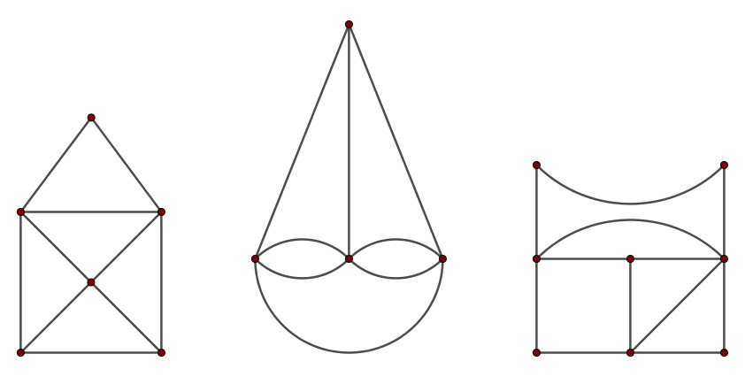
Dwa kwadraty o boku długości \(1\) narysowano tak, że środek jednego pokrywa się z
wierzchołkiem drugiego. Ile jest równe pole zamalowanej figury? 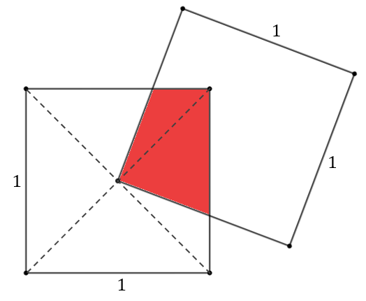
Przekątne czworokąta podzieliły go na \(4\) trójkąty. Znane są pola trzech
trójkątów. Oblicz pole czwartego trójkąta. 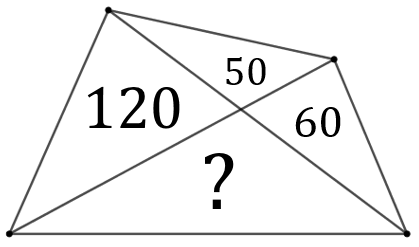
\(144\)
W kwadrat o boku długości \(1\) wpisano półokrąg i narysowano do niego odcinek
styczny. Oblicz długość tego odcinka. 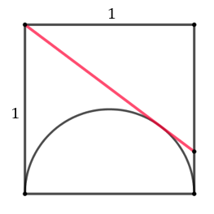
Nie odrywając długopisu od papieru narysuj \(4\) linie proste, tak aby połączyć
wszystkie \(9\) punktów. 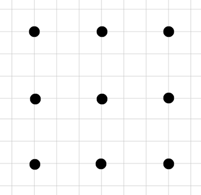
Ile kwadratów jest na rysunku? 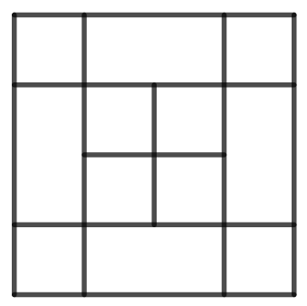
\(18\)
W poniższym rozumowaniu jest błąd. Czy umiesz go wykryć? \[\begin{split}
\text{Niech: }a=1,\ b=2:\\[6pt] a^2+b^2&=b^2+a^2\\[6pt] a^2-2ab+b^2&=b^2-2ab+a^2\\[6pt]
(a-b)^2&=(b-a)^2\\[6pt] a-b&=b-a\\[6pt] 1-2&=2-1\\[6pt] -1&=1 \end{split}\] Oto kolejny przykład
błędnego rozumowania: \[\begin{split} \text{Niech: }a=3,\ b=-3:\\[6pt] a+b&=0\\[6pt]
a+b+(2a+2b)&=0+(2a+2b)\\[6pt] 3a+3b&=2a+2b\\[6pt] 3(a+b)&=2(a+b)\\[6pt] 3&=2 \end{split}\] Czy
umiesz wskazać gdzie został popełniony błąd?
Na rysunku przedstawiono figurę wyznaczoną przez trzy półokręgi. Pola dwóch
obszarów są znane. Ile wynosi pole trzeciego obszaru? 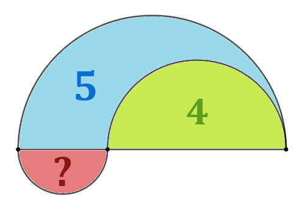
Ile trójkątów jest na każdym z rysunków? 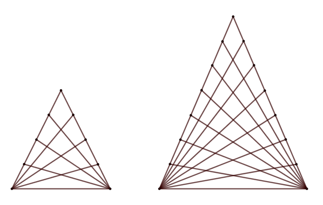
Poniższa figura została zbudowana z samych kwadratów. Ile kwadratów jest na
rysunku? 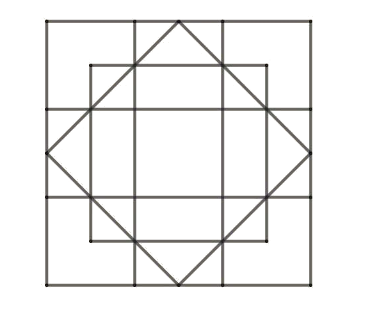
Ile trójkątów jest na rysunku? 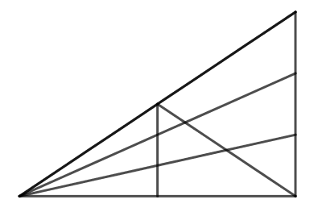
\(24\)
Filmik o bardzo dużych liczbach, postaci: \(9^{9^9}\). 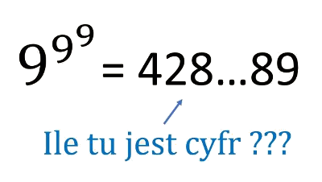
Znajdź geometrycznie takie miejsce na autostradzie, aby suma długości dróg do miast
\(A\) i \(B\) była jak najkrótsza. 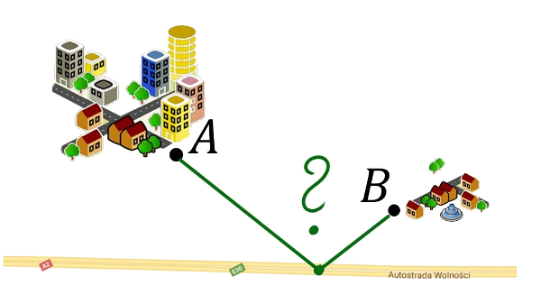
Pięć okręgów ma identyczne średnice. Wyznacz linię prostą przechodzącą przez punkt
\(S\), która podzieli drut, z którego zrobiono okręgi, na pół. 
Witraż gotycki wyznaczają dwa okręgi przystające o środkach w punktach \(A\) i
\(B\) i promieniu długości \(|AB|\) oraz odcinek \(AB\) (tak jak pokazano na rysunku). Oblicz pole
części witraża zamalowanej na niebiesko, wiedząc, że \(|AB|=a\). 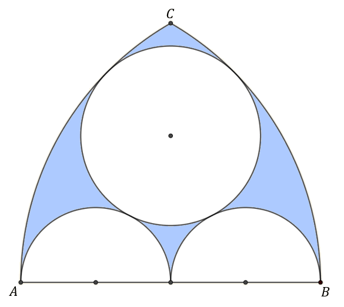
Ile jest najkrótszych dróg z punktu \(A\) do punktu \(B\)? Oddzielnie rozpatrz
przypadek z rysunku pierwszego i drugiego. 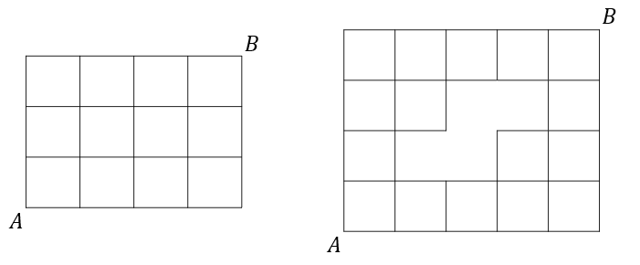
Dwa okręgi o promieniu \(2\) są styczne zewnętrznie. Ze środka jednego poprowadzone
dwie styczne do drugiego okręgu. Oblicz zamalowane pole. 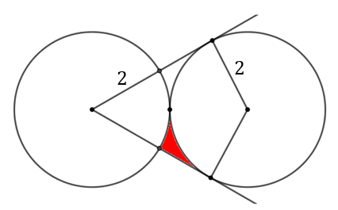
Jak dwiema liniami prostymi rozciąć krzyż na \(4\) identyczne części, aby można
było z nich zbudować kwadrat? 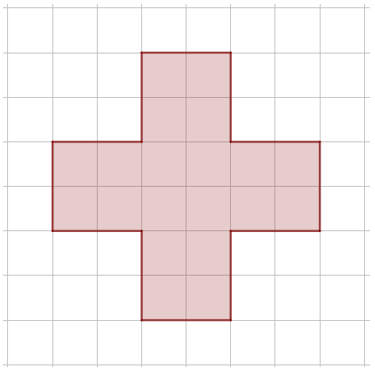
Narysuj \(3\) odcinki łączące boki prostokąta, aby oddzielić czerwone kółka od
zielonych. 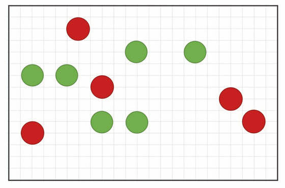
Na rysunku zaznaczono odcinki równej długości oraz trójkąt o polu \(10\). Ile
wynosi pole trójkąta \(ABC\)? 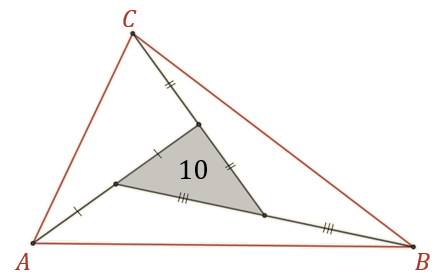
Fragment szarej figury wewnątrz okręgu obracamy o \(45^\circ \). W nowo otrzymanej
figurze otrzymujemy o jeden czerwony odcinek mniej. Dlaczego? 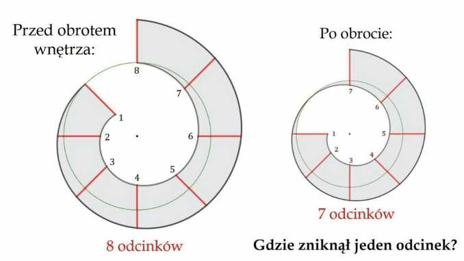
Na ile maksymalnie części można rozciąć podkowę dwiema liniami prostymi? 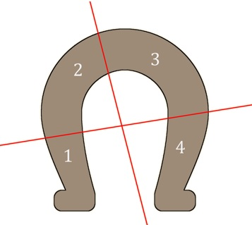 Na powyższym rysunku jest
przykładowe rozcięcie na 4 części.
Narysuj \(3\) linie proste, aby oddzielić wszystkie prezenty. 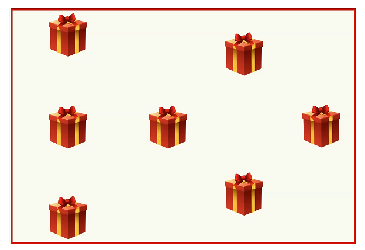
Jak za pomocą ekierki i ołówka wyznaczyć środek okręgu? 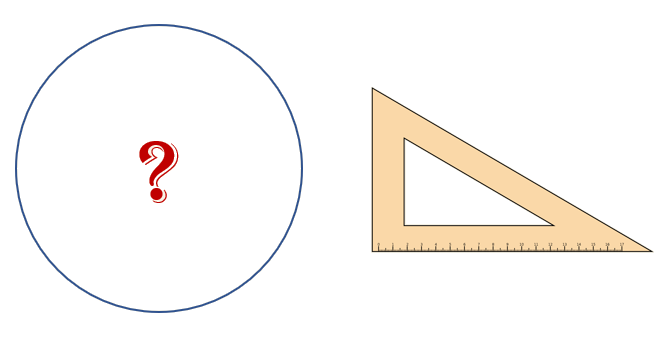
Ile trójkątów jest na rysunku? 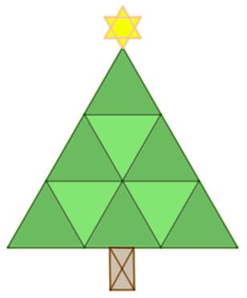
Jak ustawić \(10\) taboretów pod ścianami w kwadratowym pokoju, aby pod każdą
ścianą stało tyle samo taboretów?
Ile wynosi pole poniższej figury wyznaczonej za pomocą cyrkla o rozstawie 1? 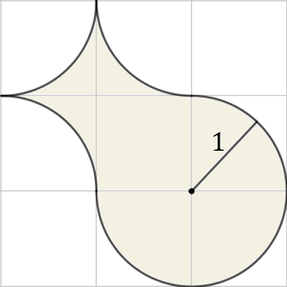
\(4\)
Zmień położenie 3 zapałek, aby otrzymać rybę skierowaną w odwrotnym kierunku. 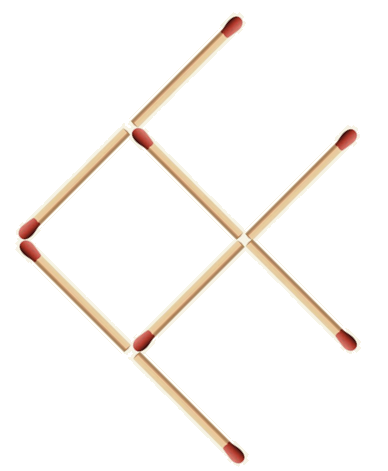
Jaki jest poprawny kod? 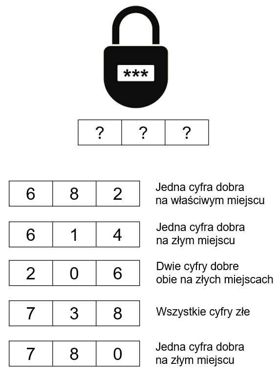
Ile wynosi wynik ostatniego działania? 
\(31\)
W obszarze ograniczonym jednym prostokątem jest \(4\) Mikołajów i \(4\) dzieci.
Dorysuj 2 prostokąty w taki sposób, aby powstały cztery obszary, a w każdym z nich jeden Mikołaj i
jedno dziecko.